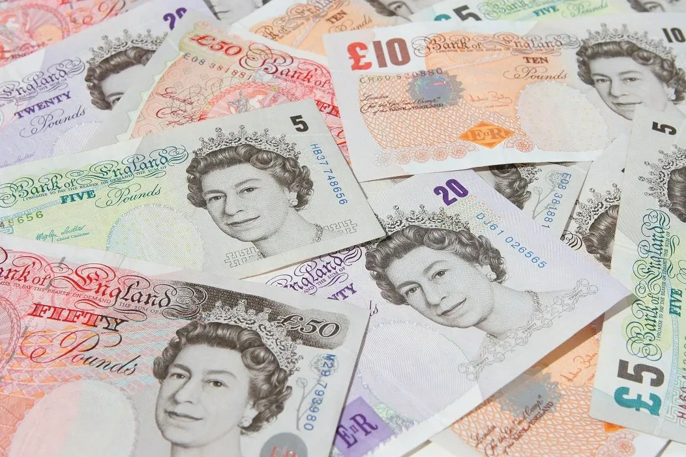

Ulaşım
Londra dünyanın en büyük ve çeşitli toplu taşıma sitemine sahiptir. Bu nedenle ulaşım için bir çok seçenek vardır ve her yere kolay ulaşım sağlandığı için verimli bir sisteme sahiptir. Londra'da araba kullanımı önerilmez. Çünkü park yerleri için ve şehir merkezinde araba kullanmak için ücret ödenmesi gereklidir. Toplu taşıma ücretleri ise toplu taşıma kullnadığın bölgeye göre değişmektedir. Londra'daki merkez bölgelerdeki gezilecek yerler yakın olduğu için yürüyerek keşfetmek mümkündür. Ayrıca bir çok yerde bisikletler bulunur bunları kiralayarak bisiklet ile de ulaşım sağlanabilir. En çok kullanılan toplu taşıma sistemleri ise metro(tube), otobüs ve overgrounddır. Londra'da tüm toplu taşıma araçlarında oyster card, banka kartı veya mobil ödeme ile telefonunuz kullanarak ödeme sağlayabilirsiniz (taksi dahil). Londra'da overground şehir merkezine uzak yerlere seyahat etmek için kullanılır. Metrolar ise 11 hat ve 270 istasyonu ile şehrin her köşesine ulaşım sağlar, metro ile ulaşım sağlanamayan yerlere ise Londra'nın ünlü iki katlı kırmızı otobüsleri ile ulaşım sağlayabilirsiniz.
Konaklama
Londra'da her bütçeye uygun konaklama seçenekleri bulunabilir. Burada kalacağınız yeri görmek istediğiniz yerlere göre yada metroya yakınlığına göre seçmekte fayda var. Kalmak istediğiniz otellere göre de gecelik fiyatları değişmektedir. Lüks oteller gecelik 300-100 £ ve üzeri, orta düzey oteller gecelik 100-300 £, bütçe dostu oteller ve hosteller gecelik 20-100 £, kiralık daireler ise konuma ve büyüklüğe göre fiyatları değişmesine rağmen gecelik 80-300 £ civarında fiyatlara sahiptir. Londra'da daha uygun fiyatlara konaklama sağlamak için Zone 2 ve Zone 3 denilen şehir merkezine daha uzak yerlerde konaklama sağlayabilirsiniz.
Bütçe
Londra'ya gelmeden önce bütçemizi konaklama, yeme-içme, ulaşım ve diğer harcamalar olarak düşünüp planlayabiliriz. Konaklama bütçenin diğer harcamalara göre daha fazla olan kısmını ayıracağımız bölümdür. Orta düzey bir otelde (örn. Premier Inn) gecelik 100-150 £ ayırmalıyız. Yeme-içme bütçesi günden güne değişebilir. Sokak yemekleri, fast food zincirleri gibi yerlerden günlük 15-20 £'a yemek yerken, orta düzey restoranlarda 30-50 £'a yemek yiyebiliriz. Ulaşım için metro ve otobüslerde 2.40£ ve 6.70£ arasında fiyatlar değişmektedir. Günlük ortalama 8-10£ ile ulaşım sağlayabiliriz. Daha ekonomik bir seyahat için bisiklet kiralama ve yakın yerler arasında yürüyerek ulaşmayı tercih edebilirsiniz. Londra'da bir çok ücretsiz müze ve aktivite bulunmaktadır, bunların yanı sıra ücretli aktiviteler de bulunur(örn. London Eye, Tower of London). London Pass sayesinde ücretli yerlere indirimli şekilde giriş sağlayabiliriz. Orta düzey bir seyahat planında günlük aktivitelere 20-40£ ayırmalıyız. Kısacası günlük kişi başı yaklaşık 150-250£ gibi düşünürek kalacağımız gün sayısına göre bütçemizi planlayabiliriz.
NOT:Bu bölümde verilen bilgiler orta düzey bir seyehat planlamasında günlük kişi başı fiyatlandırma olarak verilmiştir.